Mobile
Operario de depósito
- Recepción
- Ingreso
- Picking
- Movimiento
- Despacho
- Reingreso
Hardware Lector RFID + código de barras
Saber qué hay en un depósito es fácil. Saber dónde está cada unidad, quién la movió y cuándo, no. Diseñé un sistema de trazabilidad que combina lectura RFID y código de barras, con la operación en mobile y el control en web.

Recibir mercadería es la parte simple. El problema aparece después: cada traslado interno, cada salida y cada reingreso es una oportunidad de perder la pista de una unidad.
Para evolucionar los esquemas tradicionales basados en planillas, el sistema redefinió la lógica de inventario: pasar del conteo estático a la trazabilidad por eventos, donde cada lectura registra la historia y ubicación exacta de la unidad.
Hardware Lector RFID + código de barras
Hardware — solo supervisión
Tocá para ver que sucede en cada etapa
Verificación instantánea de ingresos contra lo planificado. La interfaz tolera escaneos por lote o unidad y contempla la pérdida de señal en playa de maniobras, permitiendo operar sin interrupciones.
Registro inicial donde la unidad se vincula a su tag RFID para iniciar su ciclo de vida. La pantalla se adapta automáticamente según el origen de la mercadería (proveedor externo o interno), reduciendo pasos de carga y obteniendo mayor detalle.
Diseñé una interfaz de recolección que reduce tiempos de búsqueda en depósito. Combina navegación guiada por ubicación física con asistencia RFID por proximidad, simplificando la localización de productos.
Verificación final de la carga antes del envío. El sistema vincula cada tag RFID escaneado a su orden correspondiente, garantizando un control de salidas sin errores de despacho ni diferencias entre el stock físico y el sistema.
Fuera del recorrido lineal, dos eventos pueden reabrirlo: Movimiento (un ítem cambia de ubicación, interno o externo) y Reingreso (lo que vuelve se reincorpora al stock con su historial intacto).
La división de plataformas no es una preferencia visual: responde al contexto de uso. La plataforma Web actúa como centro de control para supervisar el stock y armar órdenes; el entorno Mobile es la herramienta de acción en terreno.

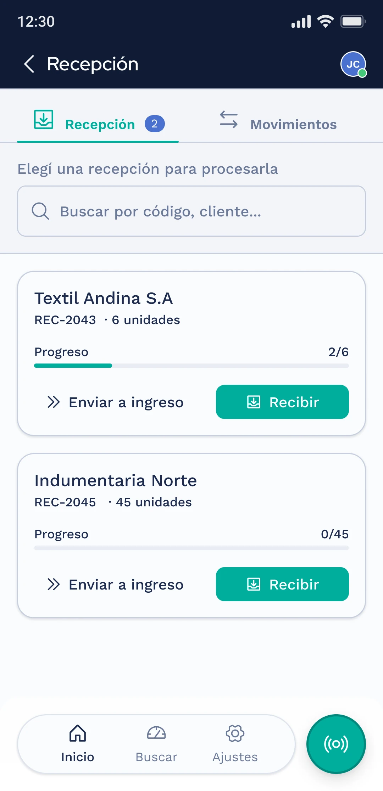
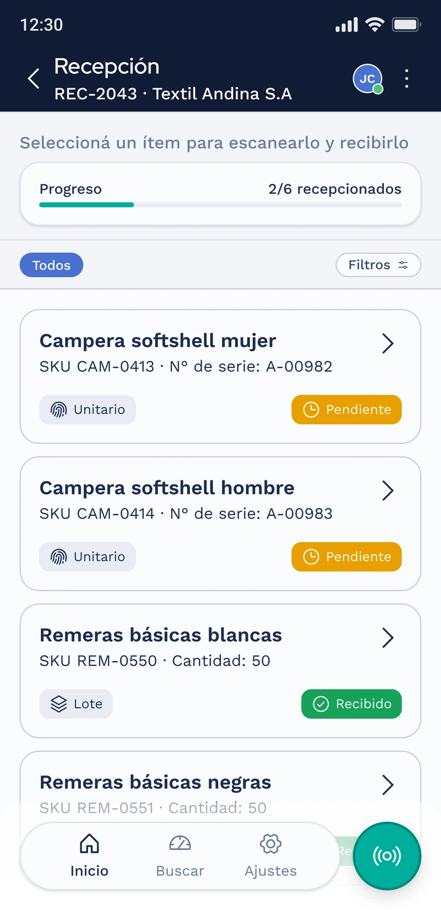
Un ítem puede rastrearse de a uno (unitario) o de a muchos bajo un mismo tag (lote). Esa distinción no es un detalle de datos: cambia qué significa escanear.
En unitario, un escaneo equivale a una unidad. En lote, un escaneo equivale a un conjunto. La misma acción física produce resultados distintos, y la interfaz lo hace explícito antes de leer.
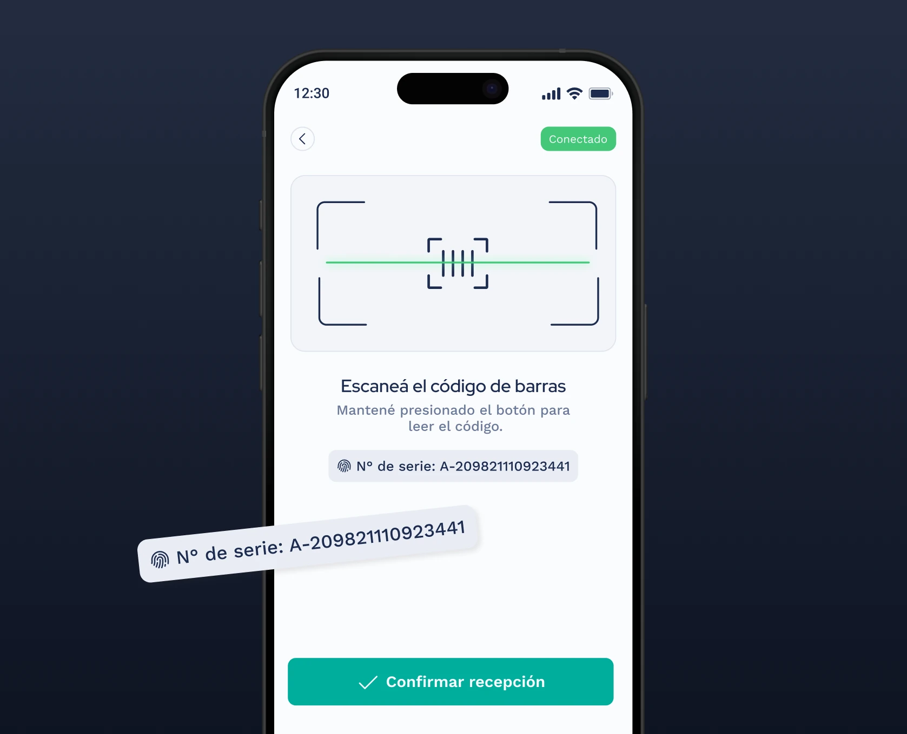
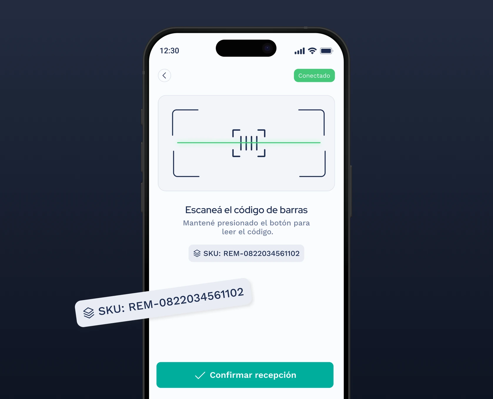
El operario elige un pedido, escanea cada etiqueta para recolectar sus ítems y, al completarlo, lo despacha. La interfaz traduce el proceso en un feedback visual claro: muestra qué unidades se verificaron y cuáles quedaron registradas en la orden, dando certeza operativa inmediata.
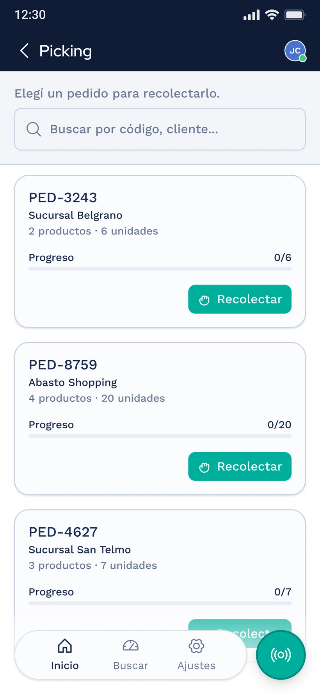
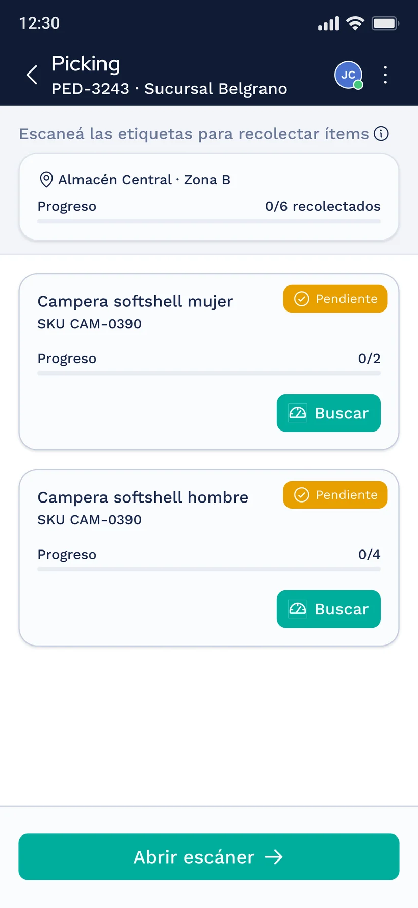
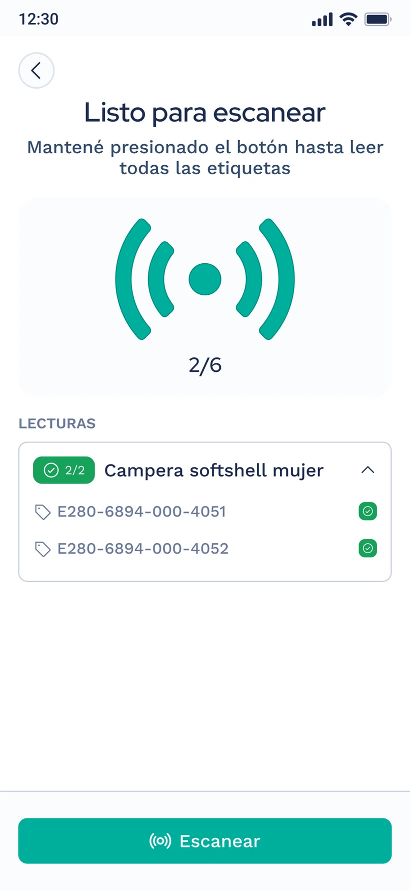
Localizar un producto específico entre miles es un desafío. El manómetro de proximidad traduce la intensidad de la señal en un indicador dinámico: a medida que el operario se acerca a la etiqueta, la interfaz responde en tiempo real confirmando la ubicación exacta.
Estás lejos. Movete lentamente hasta que el indicador se ponga en verde.
Campera softshell mujer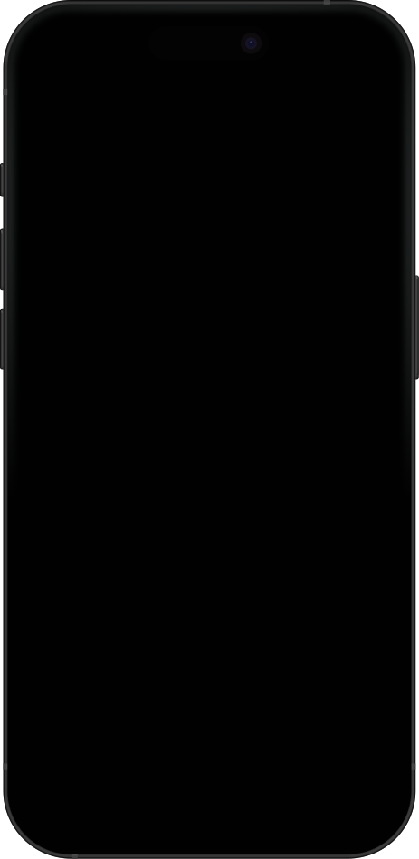
Trasladar stock exige lógicas distintas según el destino. Diseñé dos flujos independientes para evitar pantallas recargadas: una interacción directa para reubicaciones internas y un proceso por etapas con seguimiento de tránsito para transferencias externas.
El ítem cambia de ubicación dentro del mismo depósito, sin salir del circuito.
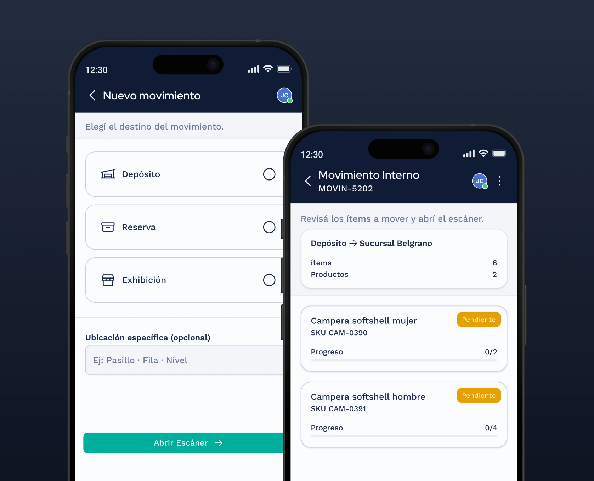
El ítem se envía a otro destino y suma etapas de tránsito hasta llegar.
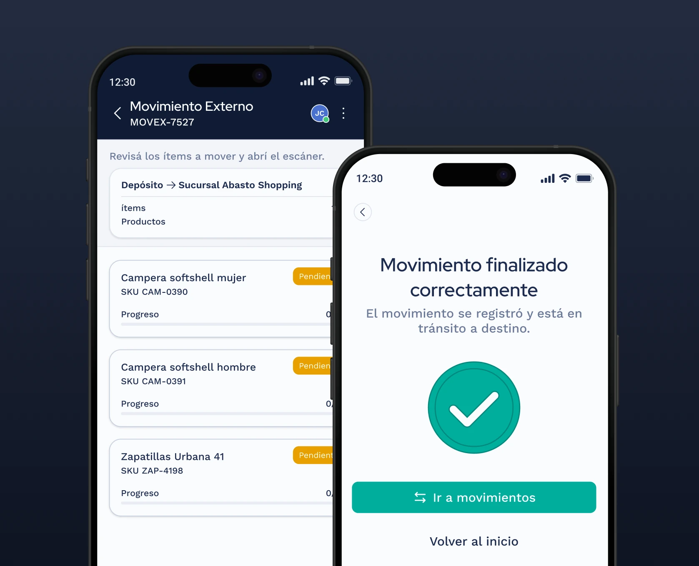
Cada escaneo, cada movimiento y cada despacho deja un evento. Acumulados, esos eventos dejan de ser registro y pasan a ser lectura del depósito.
El módulo de métricas devuelve lo que la operación generó: entre otros, un Top 5 de productos más devueltos, una señal temprana de problemas de calidad o de catálogo que antes se perdía en la planilla.
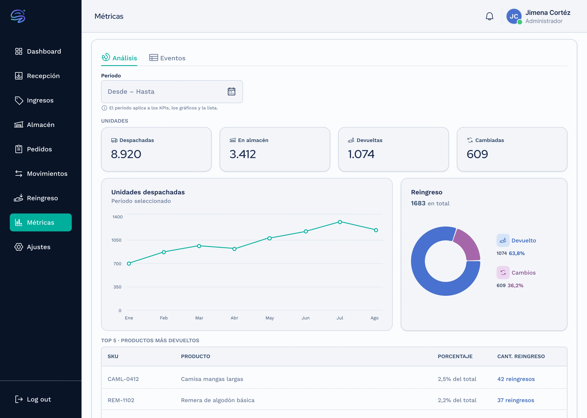
Las transiciones y microinteracciones del sistema: feedback de escaneo, cambios de estado y guías de movimiento. Las prototipé y produje apoyándome en agentes de IA para iterar rápido sin perder el detalle.
El movimiento se completó y el stock ya está actualizado
Mantené presionado el botón hasta leer todas las etiquetas
0/6 LECTURASGuardando etiquetas leídas y destino. Aguardá un momento.